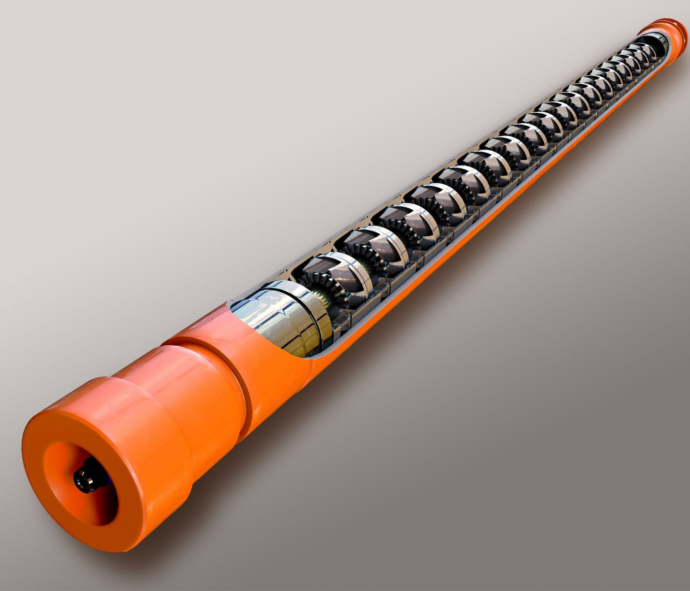
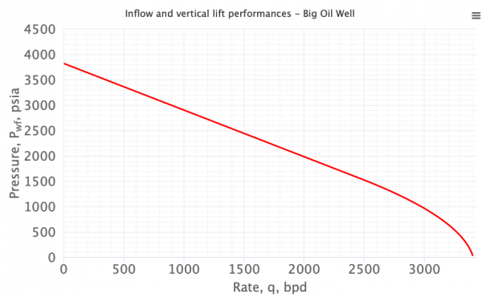
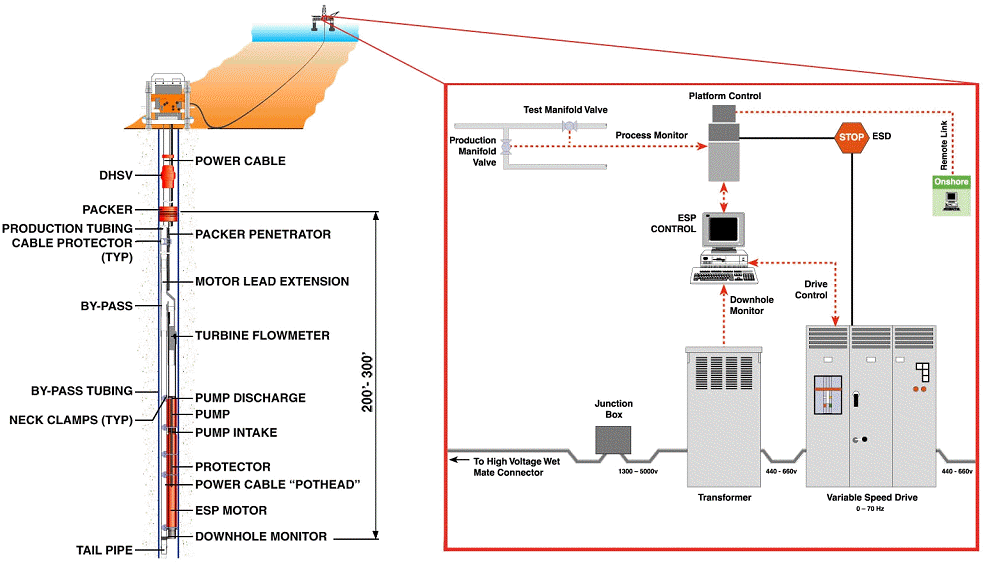

My Notes
Electric Submersible Pump for Oil Production
Artificial Lifts
Artificial lift is a crucial process in the oil and gas industry used to enhance the production of hydrocarbons from oil wells. As reservoirs age, natural reservoir pressure decreases, leading to a decline in production rates. Artificial lift systems are implemented to counteract this reduction in pressure and maintain or increase oil production. These systems provide the necessary mechanical energy to lift fluids to the surface, enabling efficient and economic oil production.
Why Use Artificial Lifts?
- Pressure Maintenance: As oil fields mature, the natural reservoir pressure diminishes, causing a decline in production rates. Artificial lifts help maintain pressure and ensure a steady flow of oil to the surface.
- Increased Recovery: Artificial lift techniques improve the overall recovery factor by effectively extracting additional oil that would otherwise remain trapped in the reservoir.
- Field Development: In many oil fields, the natural pressure may not be sufficient to push the oil to the surface from the beginning. Artificial lifts enable economic development of these fields by facilitating production from early stages.
- Versatility: Artificial lift systems can be customized to match reservoir conditions, making them suitable for various types of oil wells, including onshore and offshore operations.

Electric Submersible Pump (structure)
Types of Artificial Lifts:
Several types of artificial lift methods are employed in the oil and gas industry. The selection of the appropriate method depends on the reservoir's characteristics, well depth, fluid properties, and economic considerations. The primary types of artificial lifts include:
- Rod Pumping: Rod pumping is one of the oldest and most common artificial lift methods. It involves a surface-mounted pump connected to a series of rods that extend down into the wellbore to lift the oil to the surface. This method is suitable for low-to-medium viscosity oil and shallow to moderately deep wells.
- Gas Lift: Gas lift utilizes injected gas (usually natural gas or nitrogen) to reduce the density of the fluid column, allowing the reservoir pressure to push the oil to the surface. It is a versatile method applicable to wells with varying fluid viscosities and depths.
- ESP (Electric Submersible Pump): The Electric Submersible Pump is a highly efficient artificial lift system suitable for both onshore and offshore operations. An ESP consists of a multistage centrifugal pump placed downhole, powered by an electric motor. This pump is submerged in the well to lift oil to the surface. ESPs are ideal for wells with high fluid volumes and significant depths.
- Hydraulic Pumping: Hydraulic pumping involves the use of a downhole hydraulic pump powered by the well's flowing fluid. This method is particularly effective in deviated or horizontal wells.
- Progressive Cavity Pump: The progressive cavity pump (PCP) is a positive displacement pump used for heavy or high-viscosity oil production. It operates on the principle of a helical rotor inside a stator, creating a continuous seal to lift the fluid to the surface.
Screening for the Type of Artificial Lift Required:
Selecting the appropriate artificial lift method involves analyzing various factors. Key considerations include:
- Reservoir Characteristics: Understanding the reservoir's properties, including pressure, temperature, and fluid properties, is crucial to determine the most suitable lift method.
- Well Depth: The well's depth impacts the feasibility of certain lift methods. For deep wells, ESPs may be preferred due to their efficiency in lifting large volumes of fluids.
- Fluid Properties: Viscosity, gas-oil ratio, and water cut influence the lift method selection. For high-viscosity oil, a PCP may be more effective, while gas lift may be preferred for wells with significant gas content.
- Production Rate: The desired production rate influences the lift method. High-production wells may benefit from ESPs or gas lift systems.
- Economic Considerations: The cost of installation, operation, and maintenance of different lift systems should be evaluated against the expected production gains.
Inflow Performance Relationship (IPR):
The Inflow Performance Relationship (IPR) is a fundamental concept in reservoir engineering used to characterize the relationship between the flowing bottomhole pressure (BHP) and the production rate of a well. The IPR curve illustrates the well's productivity potential and serves as a critical tool in designing an appropriate artificial lift system, such as an Electric Submersible Pump (ESP).
Vogel's Equation:
The Vogel's equation is commonly used to estimate the IPR for oil wells. It is based on the assumption that the reservoir behavior follows a hyperbolic curve, which is often observed in many oil reservoirs.
Vogel's equation is given by:
\[Q = \frac{{Pwf - Pwf_{res}}}{{C1 + C2 \times (Pwf - Pwf_{res})}}\]IPR for Gas Wells:
For gas wells, the IPR equation is modified to account for the compressibility of the gas. The Modified Isothermal Gas Equation is often used to estimate the production rate:
\[Q = \frac{{Pwf - Pwf_{res}}}{{C1 + C2 \times (Pwf - Pwf_{res})}} \times \left( Z \times T \times \frac{{A}}{{Pwf_{res} \times B + 1}} \right)\]IPR Curve:
Using the equations above, multiple points of the IPR curve can be calculated by varying the flowing bottomhole pressure (Pwf) and determining the corresponding production rate (Q). These points are plotted on a graph to create the IPR curve.
The IPR curve typically shows an inverse relationship between BHP and production rate. As the bottomhole pressure decreases, the production rate increases until a point where the flow reaches its maximum potential. Beyond this point, further reduction in bottomhole pressure does not significantly increase the production rate, indicating that the well is producing at its maximum possible rate.

IPR Curve
ESP Design and IPR:
The IPR curve is crucial in ESP design as it helps identify the optimal operating point for the pump. The ESP design should match the pump's performance curve with the IPR curve, ensuring that the pump operates efficiently and lifts the fluids to the surface at the desired production rate.
By analyzing the IPR, engineers can determine the well's productivity potential and optimize the design of the ESP system, taking into account the well's natural reservoir pressure, fluid properties, and other reservoir characteristics. The selected ESP system should be able to handle the production rate and provide the necessary lift to overcome the well's flowing bottomhole pressure and produce fluids efficiently.
Electric Submersible Pumps (ESPs):
Electric Submersible Pumps (ESPs) are widely used in the oil and gas industry as an efficient artificial lift method. An ESP system typically consists of three main components:
- Electric Motor: The electric motor, usually a three-phase induction motor, is the prime mover of the ESP. It is designed to operate in harsh downhole conditions, including high temperatures and pressures.
- Multistage Centrifugal Pump: The pump comprises multiple stages, each with an impeller and diffuser, stacked together. This design allows the pump to generate the necessary pressure to lift fluids to the surface efficiently.
- Power Cable: A specialized power cable connects the electric motor to the surface power source. This cable must be durable and able to withstand the downhole environment.
Critical Parameters in Designing Artificial Lift:
Designing an Electric Submersible Pump (ESP) system for artificial lift oil production involves complex calculations and considerations. Here, we will dive deeper into the technical details and procedures required for ESP design:
- Reservoir Data and Inflow Performance Relationship (IPR): Before designing an ESP, engineers need to gather relevant reservoir data, including pressure, temperature, fluid properties (viscosity, API gravity), and production rate. The Inflow Performance Relationship (IPR) is crucial in understanding the well's productivity potential. The IPR curve represents the relationship between the flowing bottomhole pressure (BHP) and the well's production rate. This helps determine the well's ability to produce at different pressures.
- Pump Selection and Performance: The selection of the appropriate pump is critical for successful ESP operation. The pump performance depends on the well's production rate and the pressure required to lift fluids to the surface. To determine the pump performance, engineers use pump performance curves provided by pump manufacturers. These curves indicate pump head (pressure) and efficiency at various flow rates.
- Motor Sizing and Power Requirements: Selecting the right electric motor is essential for proper ESP operation. The motor should be sized to meet the power requirements based on the pump performance and well's conditions. The motor's horsepower should be sufficient to drive the pump and account for the downhole losses, such as friction and gas interference.
- Cable Design and Voltage Drop Calculation: The power cable connecting the motor to the surface power source must be designed to withstand downhole conditions. The cable's length and diameter should be selected based on well depth and required power transmission. Voltage drop calculations are crucial to ensure adequate power supply to the motor downhole, considering the cable length and electrical resistance.
- Intake Design and Solids Handling: The pump intake design is essential to prevent sand and solids from entering the pump, which could lead to pump damage and reduced performance. Screens or other methods are used to protect the pump from solids while maintaining a stable inflow. Solids handling capacity should be considered in the pump selection to ensure efficient operation in wells with sand or solid content.
- Vibration Analysis and Rotor-Stator Compatibility: Vibration analysis is conducted to monitor the pump's health and detect any issues that could affect performance. Excessive vibration may indicate pump wear, motor misalignment, or other mechanical problems. Engineers also need to ensure the compatibility of the rotor-stator materials to prevent issues such as electrolysis.
- Gas Handling and Gas Lock Prevention: Gas handling is crucial in ESP design, as gas can cause pump inefficiency and gas lock. Gas lock occurs when gas accumulates in the pump, preventing fluid flow. Proper gas handling design and the use of gas separator systems can mitigate these issues.
- Scaling and Corrosion Mitigation: Reservoir fluids may contain scaling and corrosive agents that can damage the pump components. Proper material selection and chemical treatments are essential to mitigate scaling and corrosion.
- Monitoring and Control Systems: ESP systems often include monitoring and control systems to optimize performance and diagnose issues. Parameters such as motor temperature, pump pressure, and power consumption are monitored to assess the system's health and efficiency.
- Safety Considerations: Safety is paramount in ESP design, especially considering downhole operations. Engineers must adhere to safety standards and procedures to ensure the well's integrity and the safety of personnel.

Electric Submersible Pump Mechanism
ESP Operation Conditions:
An ESP operates in challenging downhole conditions, and its performance depends on several factors:
- Temperature and Pressure: ESPs are designed to withstand high temperatures and pressures encountered downhole.
- Fluid Properties: The viscosity and specific gravity of the fluids being lifted impact pump efficiency and performance.
- Gas Handling: ESPs are susceptible to gas lock and gas interference, affecting their operation. Proper gas handling design is necessary.
- Scaling and Corrosion: Well fluids may contain scaling and corrosive agents, requiring appropriate material selection and chemical treatments.
- Solids Handling: ESPs should be equipped to handle sand and solids to prevent pump damage.
ESP Advantages and Disadvantages:
Advantages of ESPs:
- High Efficiency: ESPs are known for their high efficiency, resulting in lower power consumption and reduced operating costs compared to other artificial lift methods.
- Increased Production: ESPs are capable of handling large production rates, making them suitable for wells with high fluid volumes.
- Adaptability: ESPs can be tailored to match the reservoir characteristics and production requirements, allowing for better performance and reliability.
- Low Surface Footprint: Since the ESP system is located downhole, it requires minimal surface infrastructure, reducing the overall environmental impact.
Disadvantages of ESPs:
- High Initial Cost: The installation of an ESP system involves significant upfront costs, making it less viable for low-production wells.
- Maintenance Challenges: Downhole maintenance can be complex and costly, requiring specialized equipment and expertise.
- Electrical Power Requirements: ESPs rely on electrical power, making them susceptible to power supply issues and limiting their use in remote locations.
- Limited Gas Handling: ESPs are not well-suited for handling high gas content in the produced fluids.
Pump Performance Calculation:
The pump performance is represented by the pump performance curves, which provide the relationship between pump head (H) and pump efficiency (η) at various flow rates (Q). The pump head is the pressure produced by the pump, and it can be calculated using the following equation:
\[H = \left( \rho \times g \times \Delta H_s \right) + HP\]Motor Sizing:
The electric motor should be sized to meet the power requirements based on the pump's performance and the well's conditions. The hydraulic horsepower (HP) required by the pump can be calculated using the following equation:
\[HP = \frac{\eta_p \times Q \times H \times 1000}{\sqrt{3}}\]Cable Voltage Drop Calculation:
The voltage drop in the power cable (ΔV) can be calculated using the following equation:
\[\Delta V = \frac{2 \times \rho \times L \times I \times \cos(\theta)}{A \times K}\]Inflow Performance Relationship (IPR) Calculation:
The IPR curve represents the relationship between flowing bottomhole pressure (BHP) and the well's production rate (Q). The IPR can be estimated using the Vogel's equation:
\[Q = \frac{Pwf - Pwf_{res}}{C1 + C2 \times (Pwf - Pwf_{res})}\]Power Consumption Calculation:
The power consumption (W) of the electric motor can be calculated using the following equation:
\[W = V \times I \times \sqrt{3} \times PF\]The design process involves various other equations and considerations, including motor efficiency, cable sizing, pump intake design, gas handling, and solids handling capacity. The accurate and efficient design of an ESP system is crucial for optimizing oil production and maximizing reservoir recovery.